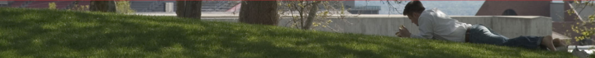

About us
Faculty & staff
Undergraduate Students
Graduate students
Courses & syllabi
News & announcements
Friends & alumni
Contact us
Campus directory
Department calendar
Contact us
Disclaimer
Text only
Webmaster